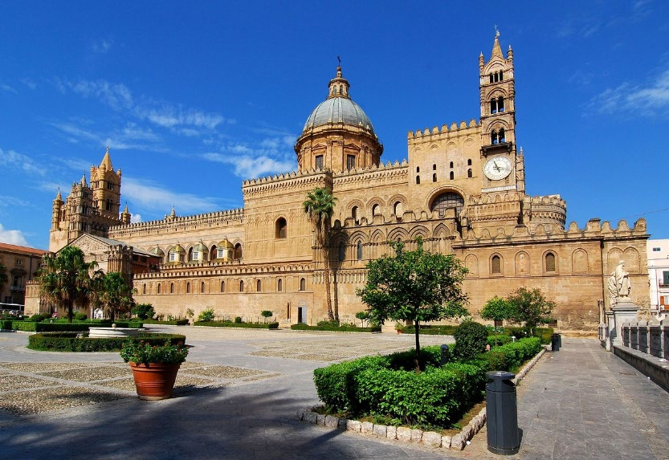
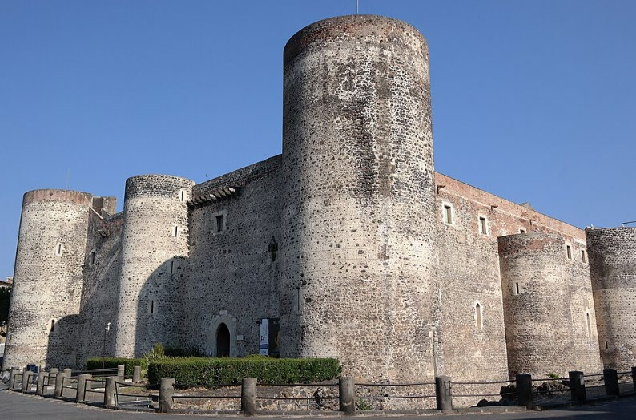
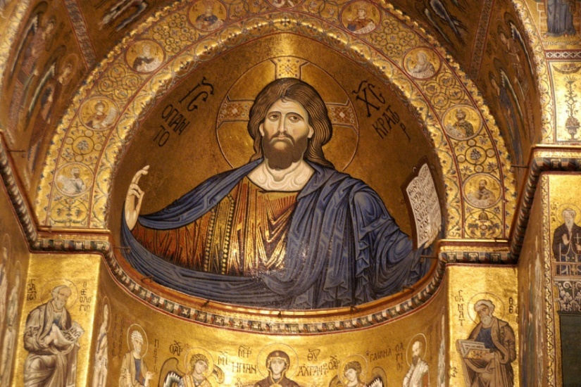

Einblicke
Foto
Einblicke in die Kultur- und Kunstgeschichte der bereisten Regionen. Die Aufnahmen unten stammen aus dem für diese Website bereitgestellten Reiseprogramm Sizilien 2027.



Originale Fotogalerien
Die bestehende Bildsammlung umfasst folgende Themenbereiche. Sie ist weiterhin über die ursprüngliche Website zugänglich:
Festung & Stadt
Kirche
Kloster
Plastik
Mosaik
Freske
Ikone
Methode
Sozial
P. M. Strässle
Originale Fotogalerien ansehen ↗
Für die Originale Fotogalerien gelten die dort angegebenen Nutzungs- und Kopierhinweise.